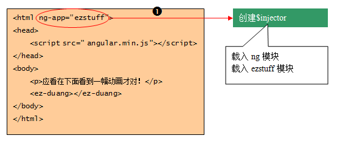

引导第1步：创建注入器
实质：引导过程使AngularJS从库转变成了一个框架。
主线：AngularJS深入骨髓地使用着依赖注入。
描述：注入器是通向AngularJS所有功能的入口，而AngularJS的功能实现，是通过模块的方式组织的。
另外注意： 在创建注入器的时候，需要告诉AngularJS载入哪些模块（ng模块是内置载入的，不需要显式指定）。
示例图： 
自动和手动得对比：
自动：在自动启动引导的场景下，可以给ng-app赋值以指定一个需要载入的模块，比如：
ng-app="ezstuff"
手动：在手动启动引导的场景下，通过bootstrap方法的第二个参数指定需要载入的模块，比如：
angular.bootstrap(document, ["ezstuff"]);
重点关键：无论自动启动还是手工启动，、
最终都是调用angular对象上的injector()方法创建了一个 注入器，然后把这个注入器存入了根对象的data里
示例：var injector = angular.injector(["ng", "ezstuff"]);
angular.element(document).data("$injector", injector);
现在还看不了动画